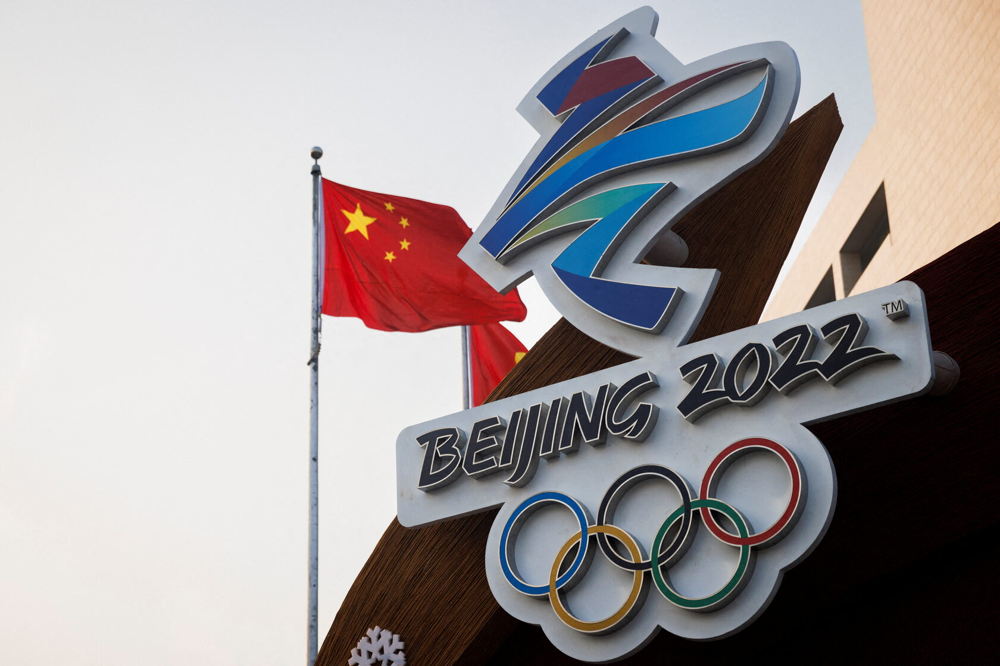
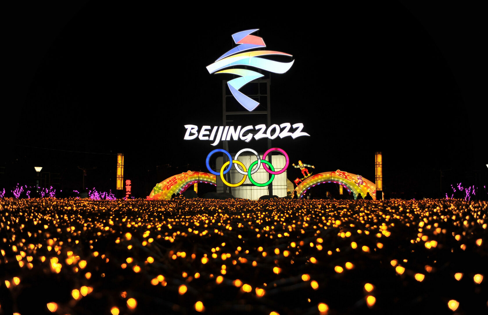
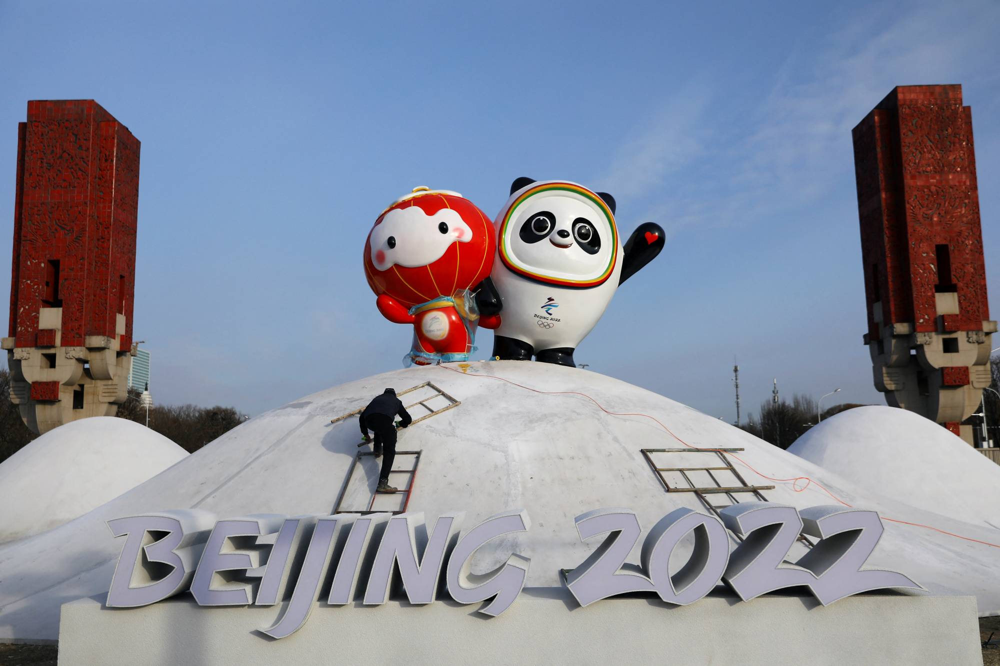

Зимова Олімпіада-2022:
все, що потрібно знати про головну спортивну подію
XXIV Зимова Олімпіада стартує у Пекіні 4 лютого. Спортсмени з 95 країн боротимуться за медалі у 15 дисциплінах. Серед особливостей Олімпійських ігор-2022 не лише суворий карантин через COVID-19, а й нові види спорту, меседж про гендерну рівність та екологічність.
ТАЛІСМАНИ, МЕДАЛІ, УЧАСНИКИ
- 95 країн
- понад 4000 учасників
-
15 дисциплін,
- 7 з яких - нові
- 109 медалей
На Олімпійських іграх у Пекіні буде представлено 95 країн, дві з яких вперше візьмуть участь у зимових Олімпійських іграх, - це Гаїті та Саудівська Аравія. Після перерви знову виступлять збірні Американського Самоа, Перу, Трінідад та Тобаго та Віргінських Островів. На цій Олімпіаді кількість жінок-спортсменок стане рекордною (квоту збільшили з 41% до 45%).
ДЕ ПРОХОДИТЬ ОЛІМПІАДА?
Стати господарем XXIV зимової Олімпіади Пекін отримав право ще у 2015 році. За результатами голосування Міжнародного олімпійського комітету, столиця КНР лише на 4 голоси випередила Алмати (Казахстан). Цікаво, що Пекін став першим в історії містом, яке приймає і зимові, і літні Олімпійські ігри. Багато об'єктів, збудованих для змагань 2008 року, використовуватимуться повторно. Наприклад, стадіон "Пташине гніздо", де відбувалися церемонії літніх Ігор 14 років тому.

ЕМБЛЕМА
У грудні 2017 року було представлено офіційний логотип зимових Олімпійських ігор 2022 року у Пекіні. Емблема називається "зимова мрія". Основна частина її представлена у вигляді стрічки, що розвівається. Це символізує гірські хребти Китаю, спортивні об'єкти, лижні траси та ковзанки. Обрис стрічки відтворює китайський ієрогліф 冬 (зима) і нагадує фігуру ковзаняра у верхній частині та силует лижника в нижній. Синій колір емблеми уособлює майбутнє, а також чистоту льоду та снігу. Жовтий та червоний (кольори китайського прапора) – символізують прагнення, молодість та життєву енергію. Нижче на логотипі розташований напис Beijing 2022, ще нижче - п'ять олімпійських кілець. Форма букв передає характерні риси китайської техніки вирізування прикрас із паперу.
ТАЛІСМАНИ ОЛІМПІАДИ-2022

У вересні 2019 року організатори Олімпіади у Пекіні презентували офіційний талісман змагань. Ним стала панда на ім'я Бін Дуньдунь, одягнена в крижаний костюм, що нагадує космічний скафандр.
Яскраві різнокольорові кільця, розташовані навколо мордочки панди, символізують облаштовані за новими технологіями льодові та снігові арени Пекіна, а серце на лівій лапі - гостинність Китаю.
- шось
- щє шось написано
-
якийсь тєкст
- та досить вже
- слова закінчились
- ......
ВИДИ СПОРТУ
18 липня 2018 року Міжнародний олімпійський комітет оголосив про додавання 7 нових дисциплін до програми зимових Олімпійських ігор у Пекіні:
-
▶ жіночі одиночні змагання з бобслею
- чоловічі та жіночі змагання з фристайлу в дисципліні біг-ейр
- змішана естафета у шорт-треку
- шось там написано 😀
- ▶ змішані командні змагання з фристайлу в акробатиці, стрибках на лижах з трампліну та сноуборд-кросі.